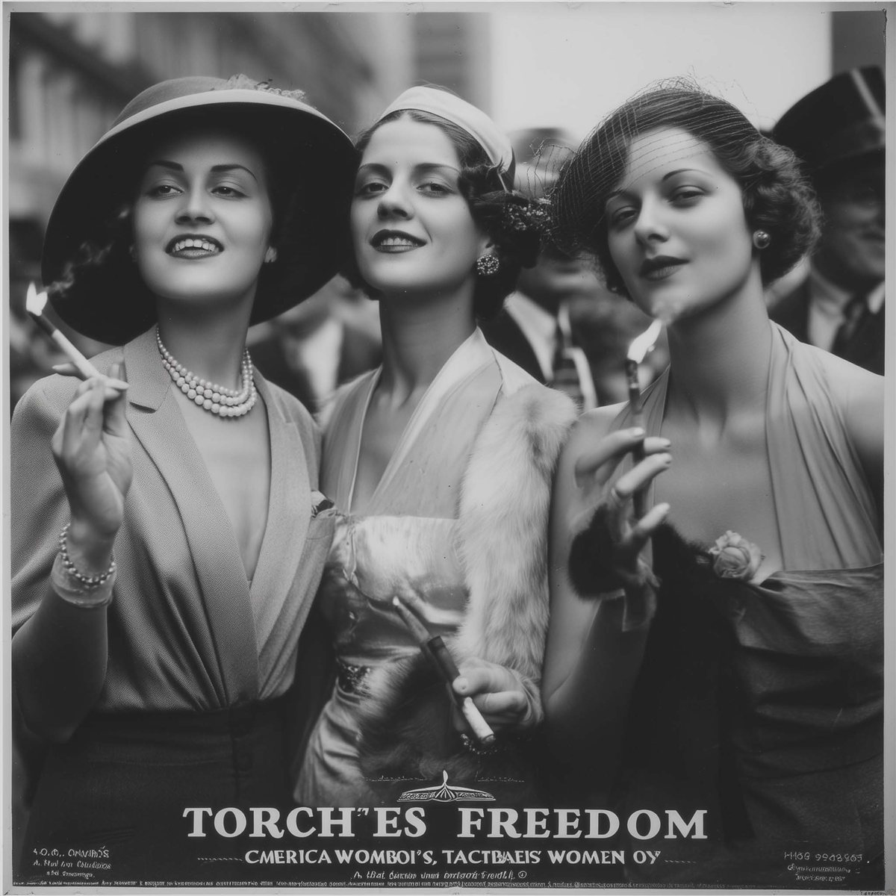
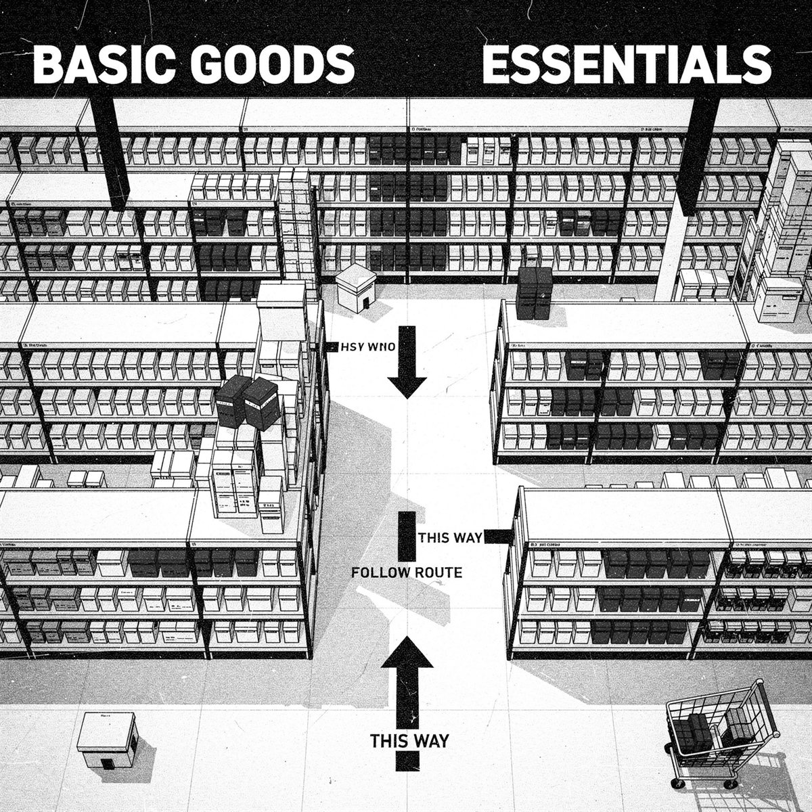
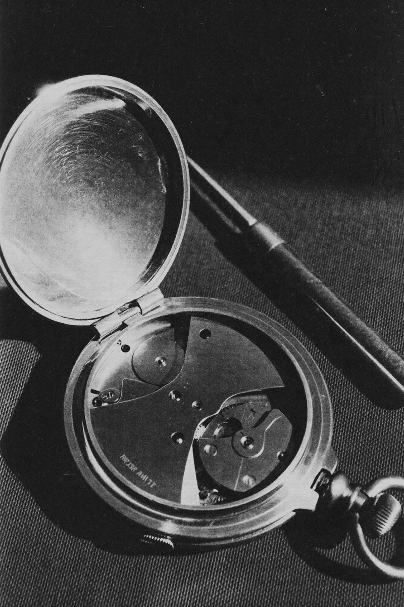
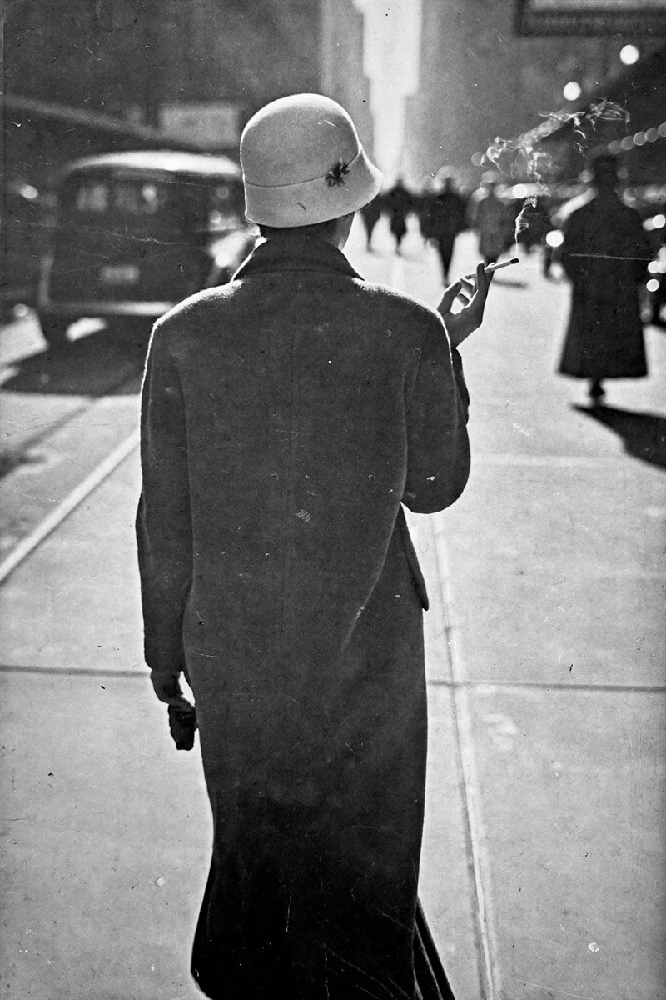

Arquitetos do desejo Como as marcas constroem suas ideias
Nem tudo o que você deseja nasceu em você. Foi desenhado por outras pessoas há décadas, e por algoritmos. Persuasão, ética e poder: o ensaio completo.
Bernays redesenhou o significado de um objeto.


Em 1929, um grupo de mulheres caminhou pela Quinta Avenida fumando. Estavam acendendo «tochas da liberdade».
No dia seguinte, os jornais de todo o país publicaram a imagem. Em menos de uma década, o tabagismo feminino se normalizou nos Estados Unidos. Um mercado inteiro foi criado do nada.
Esse é o trabalho de um arquiteto do desejo. Não vender um produto. Construir o mundo em que esse produto faz sentido.
A cronologia da persuasão
A persuasão não é uma invenção do marketing digital, nem das agências do século XX. Tem uma genealogia longa e surpreendentemente coerente.
Cada figura desta linha do tempo acrescentou uma camada ao que hoje chamamos de comunicação persuasiva — e entender essa história é a única forma de usá-la com consciência.
Transformou a persuasão de «intuição» em metodologia científica. No tratado Retórica, estabeleceu que todo discurso persuasivo opera em três dimensões simultâneas — e que ignorar qualquer uma delas é enfraquecer-se.
Não era publicitário, mas deu à persuasão sua ferramenta mais poderosa: o subconsciente. Revelou que a maioria das decisões humanas não é racional, mas vem de desejos reprimidos e medos profundos. A partir de Freud, persuadir deixou de ser «explicar benefícios» e passou a ser «prometer a satisfação de desejos ocultos».
Antes de Hopkins, a publicidade era arte. Depois dele, virou experimento. Em Scientific Advertising (1923), estabeleceu que todo anúncio deve ser testado, medido e justificado por resultados — não por intuição criativa. Foi o primeiro a usar cupons de desconto para rastrear conversões, a testar títulos alternativos e a tratar o copywriting como ciência. Vendeu o Listerine fabricando o medo social do mau hálito — e criou um mercado do nada. Seu legado direto: cada teste A/B que você faz hoje.
Sobrinho de Freud, aplicou as teorias psicológicas às massas e criou as relações públicas modernas. Seu conceito central: para vender um produto, não ataque o cliente — mude a cultura que o cerca. Fez as mulheres fumarem associando o cigarro à liberdade feminina, chamando-os de «tochas da liberdade». Fabricou o hábito americano do café da manhã com ovos e bacon usando médicos como porta-vozes pagos.
O gênio que entendeu que o mercado tem etapas. Seu livro Breakthrough Advertising é a bíblia do copywriting moderno. Classificou o público em cinco níveis de consciência — do cliente que não sabe que tem um problema até o que está pronto para comprar. Sua contribuição central: persuasão não é «gritar mais alto». É dizer exatamente o que o cliente precisa ouvir segundo o que ele já sabe.
O psicólogo social que codificou a persuasão em sete princípios universais. Seus estudos demonstraram que o cérebro humano usa «atalhos» cognitivos para decidir rápido — e que esses atalhos podem ser identificados, compreendidos e, portanto, usados de forma consciente ou explorados de forma manipuladora.
Representam a síntese moderna: transformaram os princípios de Freud, Bernays e Schwartz em sistemas replicáveis de vendas — funis, copywriting direto, ofertas irresistíveis. O que era arte virou processo. E o que era processo virou uma indústria multimilionária de cursos que ensinam exatamente o que Bernays fez no século passado.
O legado de Aristóteles que todo copywriter usa sem saber
Todo ato persuasivo opera em três dimensões simultâneas. Não é possível separar uma da outra sem enfraquecer o argumento.
A credibilidade de quem fala. Se a audiência não confia no emissor, o argumento morre antes de começar. Por isso os influenciadores constroem audiência antes de vender — e por isso o respaldo médico de Bernays funcionou.
A conexão emocional com o estado do ouvinte. A lógica convence, mas a emoção move à ação. Todo anúncio eficaz opera nesta camada — até os que parecem puramente informativos.
A prova racional — dados, argumentos, evidências. Necessária para justificar a decisão que a emoção já tomou. O comprador precisa do logos para se sentir inteligente depois de ter agido por pathos.
O problema moderno — visível sobretudo no ensino do copywriting — é absolutizar só um desses elementos. Quem ensina apenas técnicas emocionais ignora a credibilidade. Quem vende só dados ignora o que realmente move as pessoas. E quem se apoia só em autoridade sem substância constrói um castelo de papel. Aristóteles sabia que os três precisam estar presentes.
O que é a persuasão, na verdade
Ninguém acusa um advogado de manipulação por apresentar os melhores argumentos a favor do seu cliente.

A persuasão é preparação cuidadosa, enquadramento adequado, apresentação de provas e sintonia emocional com o público. É o mecanismo pelo qual a verdade se torna conhecida.
Essa visão sustenta práticas centrais da sociedade moderna: o sistema jurídico, a terapia, a própria economia de mercado.
E, no entanto, essa mesma tradição produziu Hopkins fabricando ansiedades e a De Beers reescrevendo rituais sociais inteiros.
Onde está a linha? A verdade é inerentemente boa — mas nem toda persuasão serve à verdade.
É impossível não influenciar
Antes de responder onde está a linha, é preciso destruir uma ilusão cômoda: a de que existe uma posição neutra.
Toda interação humana implica influência. Até o silêncio influencia. Não responder a uma mensagem comunica algo. Recusar-se a aprender persuasão não torna ninguém mais ético — só menos consciente do impacto que já causa.
O supermercado não é neutro. Nunca foi.
A pergunta não é se vamos influenciar. É como. E, sobretudo: para onde.

«Não criamos demanda, só atendemos a demanda existente»
O desodorante e o suor. Antes das campanhas publicitárias do início do século XX, o suor não era considerado um problema social grave para a maioria das pessoas. Foi a publicidade que construiu a norma de que cheirar a suor era inaceitável, vergonhoso, motivo de exclusão social — e depois vendeu o desodorante para resolver a ansiedade que ela mesma criou. Claude Hopkins fez o mesmo com o mau hálito quando vendeu o Listerine.
O anel de diamante. O anel de diamante no noivado não é uma tradição secular. É uma campanha da De Beers de 1947 — «um diamante é para sempre» — que reescreveu um ritual social inteiro. Antes disso, o diamante era uma pedra cara entre outras. A campanha associou a pedra à permanência do amor e criou uma norma cultural tão sólida que hoje parece ter existido desde sempre. Se você perguntar a alguém de onde vem o costume, provavelmente dirá «sempre foi assim». Não foi.
O café da manhã americano. O café da manhã com ovos e bacon? Bernays foi contratado por uma empresa de bacon nos anos 1920 e convenceu médicos a declarar publicamente que um café da manhã substancioso era essencial para a saúde. Os jornais publicaram. Um hábito cultural foi fabricado com a roupagem de conselho médico.
O marketing não atende demanda. Também a cria. E quem nega isso toma decisões piores, porque nunca vai examinar com honestidade o que está fazendo.

Fabricar o problema para vender a solução
A influência mais sofisticada não responde a uma necessidade existente. Ela a constrói do zero.
Hopkins popularizou o termo médico «halitose» para o mau hálito. Antes da sua campanha, o mau hálito não era considerado um problema social grave nem motivo de vergonha ou exclusão. Foi a publicidade que construiu essa norma. Não houve coerção: ninguém obrigou ninguém a comprar. Mas fabricou-se metodicamente uma insegurança para vender a solução. O mercado multimilionário do enxaguante bucal nasceu de uma ansiedade desenhada.
No início do século XX, o suor não era considerado um problema social grave. Foi a publicidade que construiu a norma de que cheirar a suor era motivo de vergonha e exclusão social. O padrão é idêntico ao de Hopkins: identificar uma condição humana normal, redefini-la como defeito social e oferecer o produto como solução.
Somos responsáveis pelo que as pessoas acabam desejando? Se a demanda foi fabricada, a persuasão que a satisfaz pode ser considerada legítima?
Coerção, manipulação e persuasão
Para sair do moralismo vago e entrar em território útil, são necessárias definições precisas. Existem três formas fundamentais de influenciar o comportamento humano.
Elimina completamente a escolha por meio de ameaça ou força física. «Compre ou publico seus dados.» Roubo. Violência. Universalmente imoral. Ponto final.
Distorce a capacidade de decisão sem usar força. Opera por meio de emoções fabricadas, informação omitida ou estados afetivos induzidos artificialmente. A escolha existe formalmente — mas foi comprometida.
Apresenta argumentos, evidências e enquadramentos para que a outra parte possa aceitar ou recusar livremente. Melhora ou mantém a capacidade de decisão de quem recebe a influência.
A maioria das discussões sobre ética em marketing trava porque as pessoas pulam direto da coerção para a persuasão — como se qualquer coisa que não fosse violência fosse automaticamente aceitável. Mas existe um território inteiro entre as duas.
Os algoritmos: manipulação sem intenção
O caso mais revelador da manipulação contemporânea é aquele em que não existe uma intenção humana identificável de prejudicar alguém.
Não foi inventado por um executivo malévolo. Explora o efeito padrão — a tendência humana de aceitar a opção pré-definida em vez de tomar uma decisão ativa. Para não ver o próximo episódio, você precisa agir. Para ver, não precisa fazer nada. A assimetria de esforço é deliberada e calculada para aumentar o consumo.
Não mostra o que você «quer» — mostra o que maximiza a probabilidade de você continuar assistindo. O que maximiza a retenção costuma ser o conteúdo mais intenso emocionalmente: thrillers, dramas com cliffhangers, reality shows. Não necessariamente o que você consideraria mais valioso na manhã seguinte. As miniaturas são otimizadas com testes A/B para maximizar cliques — não para representar fielmente o conteúdo.
O critério definitivo
Depois de 2.400 anos de história, da Grécia antiga aos algoritmos do Vale do Silício, chegamos ao ponto que realmente importa. O critério ético da persuasão não é «houve ou não coerção?». É outro:
Se não pode revelar o mecanismo, é manipulação.

A Nike pode dizer abertamente: «associamos nossos produtos a atletas de elite para que você sinta que o produto pertence ao universo da excelência, mesmo que o use para caminhar no parque». A campanha sobrevive a essa revelação.
O influenciador que aluga um carro de luxo para vender um curso não pode dizer: «alugamos este carro para que você associe o meu sucesso ao resultado que terá com o meu curso, sabendo que este carro não é meu e que nunca apliquei este método fora do contexto de vender o método». Isso destrói a campanha, porque a campanha é a ilusão.
O único critério que importa
Depois de 2.400 anos de história — de Aristóteles aos algoritmos, da tocha da liberdade de Bernays ao autoplay da Netflix — chegamos ao único critério filosófico que resiste ao tempo.
Não é «houve coerção?». Não é «eu disse com boas intenções?». Não é «ninguém foi obrigado?». Esses critérios são fáceis demais de passar e cômodos demais para quem quer se justificar.
Esta influência deixa a pessoa em melhor ou pior posição para decidir o que genuinamente lhe convém?

Um arquiteto do desejo que constrói mal não lhe dá ferramentas — tira. Fabrica urgências que não existem. Planta medos que você não tinha. Constrói modelos aspiracionais que sabe serem falsos. E quando você descobre o mecanismo, o que sente não é admiração pela técnica — é a sensação exata de ter sido usado.
Todos os grandes nomes desta história — Aristóteles, Freud, Hopkins, Bernays, Schwartz, Cialdini — compreenderam algo que a maioria dos profissionais de marketing modernos evita admitir: influenciar é inevitável, mas a direção dessa influência é uma decisão moral.
Você não pode não influenciar. Mas pode escolher se constrói ou se destrói a capacidade de decisão de quem o escuta.
Fontes e pensadores
Retórica: ethos, pathos, logos
A interpretação do inconsciente
Scientific Advertising (1923)
Propaganda (1928) · Crystallizing Public Opinion
Breakthrough Advertising (1966)
Influence: The Psychology of Persuasion (1984)
The Ultimate Sales Letter · série No B.S.
DotCom Secrets · Expert Secrets · Traffic Secrets